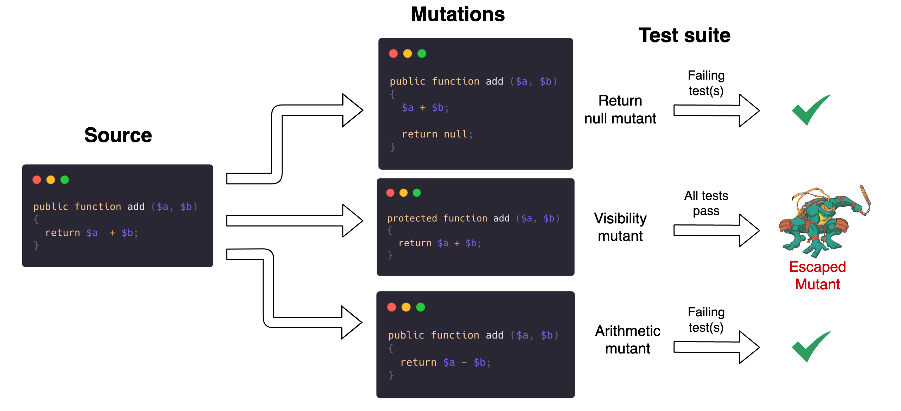
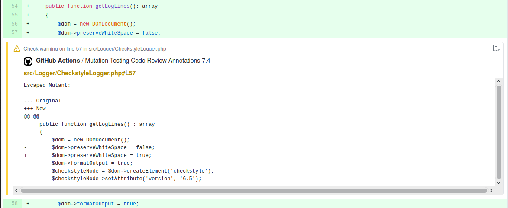

Mutation Testing
- Published: 10-02-2021
Introduction
How do you determine if the current test suite adds enough value? Do the tests cover all edge cases? If you solely rely on code coverage, you might be missing out.
In a recent talk at the Laracon EU Online conference, my colleague Jeroen Groenendijk highlighted the significance of Mutation Testing in achieving greater confidence in the test suite of your application.
In this blog, I'd like to highlight the concepts of Mutation Testing, explain how to get started using Infection PHP by Maks Rafalko, show some practical examples and finally explain how to use Mutation Testing in a CI setup.
What is Mutation Testing
A mutation testing tool will manipulate (mutate) pieces of your source code and run the test suite against this piece of mutant source code. The mutated code should trigger a failing test, or the mutant escapes. Escaped mutants are a sign of weakly tested code.
As an illustration, take a look at the following example.

The add() method is mutated in three different ways:
- The method returns
null- The
+operator changed to the-operator- Method visibility changed from
publictoprotected
In the diagram, the tests fail if null is returned and when the addition is replaced with a subtraction. However, the method's visibility is likely too broad. Hence mutating it to protected didn't yield a failing test. Therefore, it should be changed to protected or even private, adhering to the best practice of keeping the public API of this class to the minimum.
Getting started with Infection PHP
If you want to play around, check the Infection Playground, where you can write the code, tests, and run Infection right from within your browser. Read on to learn more about setting up Infection PHP in your project.
Setting up Infection PHP
Infection requires PHP version 7.2 (or higher) and an enabled debugger of choice: Xdebug, phpdbg or pcov. Tip: make sure to check out LearnXDebug.com when you're setting up Xdebug in a Laravel oriented development environment.
In the steps below, I assume having xDebug installed.
While you have multiple options to install Infection, I would recommend installing it as a dev dependency using composer within your project.
Step 1. Install Infection PHP
composer require --dev infection/infection
Step 2. Run Infection
vendor/bin/infection
On the first run, Infection will ask for input:
- Directories to include:
- For Laravel projects, this means your
appdirectory.- For PHP packages this means the
srcdirectory.- Excluding directories from source directories:
- Leave this blank. Unless you have PHP code living in the source directory that Infection shouldn't mutate.
- Where to store the text log file:
- I would recommend saving the mutations to (e.g.)
infection.log. All escaped mutants are preserved here for later review.- Alternatively, you may use the
--show-mutationsoption to log the mutations to the terminal output.
You'll now find infection.json.dist in the root of your project reflecting your input:
{
"source": {
"directories": [
"src"
]
},
"logs": {
"text": "infection.log"
},
"mutators": {
"@default": true
}
}
You can specify if you want to enable (or disable) a specific mutator under the "mutators" key. Make sure to check the complete list of available mutators.
Tip: allow the mutation tests to run in parallel by providing the --threads option and setting it greater than 1. For example, using 4 threads you'd run vendor/bin/infection --threads=4. Using parallel testing will greatly speed up running the mutation tests. You can find an overview of all command-line options at https://infection.github.io/guide/command-line-options.html.
Code Examples
Example 1: Calculating shipping cost
To demonstrate Mutation Testing in practice, I'll borrow the example from Jeroen's talk.
Imagine having a ShippingCalculator service class to determine if a passed in Product qualifies for free shipping. For simplicity’s sake, let's say the Product class accepts a $price integer through its constructor and provides public access to a $shipsForFree property.
The ShippingCalculator class determines that a Product receives free shipping when:
- The price is equal to or greater than the threshold (set to an arbitrary value)
- The product's $shipsForFree property is true (or truthy)
<?php
class ShippingCalculator
{
const FREE_SHIPPING_THRESHOLD = 20;
public static function hasFreeShipping(Product $product): bool
{
if ($product->price >= self::FREE_SHIPPING_THRESHOLD) {
return true;
}
if ($product->shipsForFree) {
return true;
}
return false;
}
}
Testing the code with PHPUnit
To make sure the ShippingCalculator::hasFreeShipping() method works properly, we can think of adding the following unit tests to ensure proper behavior:
- When a product's
$priceexceeds the threshold, it should ship for free - When a product's
$pricedoes not exceed the threshold, it should not ship for free - When a product's
$shipsforFreeproperty set totrue, it should ship for free
<?php
class ShippingCalculatorTest extends TestCase
{
/** @test */
function product_ships_for_free_when_price_is_above_treshold()
{
$product = new Product($price = ShippingCalculator::FREE_SHIPPING_THRESHOLD + 1);
$this->assertTrue(ShippingCalculator::hasFreeShipping($product));
}
/** @test */
function product_does_not_ship_for_free_when_price_is_below_treshold()
{
$product = new Product($price = ShippingCalculator::FREE_SHIPPING_THRESHOLD - 1);
$this->assertFalse(ShippingCalculator::hasFreeShipping($product));
}
/** @test */
function product_ships_for_free_when_ships_for_free_property_is_true()
{
$product = new Product(ShippingCalculator::FREE_SHIPPING_THRESHOLD - 1);
$product->shipsForFree = true;
$this->assertTrue(ShippingCalculator::hasFreeShipping($product));
}
}
With these three tests, the code coverage report from PHPUnit (which you can generate using vendor/bin/phpunit --coverage-text) reveals a code coverage of 100% for both classes.
Summary:
Classes: 100.00% (2/2)
Methods: 100.00% (2/2)
Lines: 100.00% (7/7)
Running Infection PHP
Now, we'll run Infection PHP using vendor/bin/infection and see if any mutants escape.
.M.... (6 / 6)
6 mutations were generated:
5 mutants were killed
0 mutants were not covered by tests
1 covered mutants were not detected
...
Metrics:
Mutation Score Indicator (MSI): 83%
Mutation Code Coverage: 100%
Covered Code MSI: 83%
Oh no, a mutant has escaped!
Furthermore, our MSI is 83%, while the generated mutations covered 100% of the code. This means 5 out of 6 mutants were killed.
When we check our log file, we see the [M] GreaterThanOrEqualTo mutant escaped:
Escaped mutants:
================
1) ../src/ShippingCalculator.php:15 [M] GreaterThanOrEqualTo
--- Original
+++ New
@@ @@
- if ($product->price >= self::FREE_SHIPPING_THRESHOLD) {
+ if ($product->price > self::FREE_SHIPPING_THRESHOLD) {
The missing test
It becomes apparent that we are missing a crucial test: we did not assert what happens when the $price is equal to the free shipping threshold.
Infection PHP expected at least one of our tests to fail when mutating the conditional from a great-than-or-equals to a greater-than comparison. Since our test suite didn't fail, this mutation got away unnoticed.
Let's fix that by adding in the "forgotten" boundary test:
<?php
/** @test */
function product_ships_for_free_when_price_equals_threshold()
{
$product = new Product(ShippingCalculator::FREE_SHIPPING_THRESHOLD);
$this->assertTrue(ShippingCalculator::hasFreeShipping($product));
}
When we run Infection again, we get an MSI of 100%. No escaped mutants this time!
Example 2: Redirection
After using mutation testing in my Laravel projects, I learned that mutation testing drives out tests I would otherwise not have written.
Take a look at the following example, where users are redirected to a specific page together with a 'date' parameter from the store() controller action.
<?php
class AppointmentController
{
public function store()
{
// controller logic
return redirect(route('appointments.index', ['date' => $date]));
}
}
In my test for this controller action, I initially did not check that the store() method redirects the user to the appropriate page for the submitted date. Therefore, when running the mutation tests, the following mutant had escaped:
3) .../app/Http/Controllers/AppointmentController.php:163 [M] ArrayItemRemoval
--- Original
+++ New
@@ @@
- return redirect(route('appointments.index', ['date' => $date]));
+ return redirect(route('appointments.index', []));
}
}
While this date parameter in the redirect is crucial for users of the application to land on the appropriate page, I didn't have a test for this behavior. Until now, not having a test for the specific redirect could go unnoticed. Thanks to mutation testing, I've now discovered this gap and it has forced me to add a test covering this scenario.
Using Infection in CI
It is possible to run mutation tests in Continuous Integration (CI) against newly added code or before builds.
You can set a --min-msi score option to force a certain percentage of mutants to be killed and gradually increase this number to improve the project's test suite. If the MSI score is lower than required, the build will fail.
Small projects
For small projects, the simplest option is to run the PHPUnit tests while saving the test coverage files in a build directory and then feeding those generated report files directly to Infection PHP.
vendor/bin/phpunit --coverage-xml=build/coverage-xml --log-junit=build/phpunit.junit.xml
vendor/bin/infection --threads=2 --coverage=build --min-msi=70
GitHub Actions
Although Infection easily integrates with any CI setup, I like to highlight the newly added integration with GitHub Actions (in version 0.20). It is now possible to log escaped mutants in committed code directly within a PR!

To make use of this feature, you can add the following action to your GitHub Action workflow:
- name: Run Infection for added (A) and modified (M) files
run: |
git fetch --depth=1 origin $GITHUB_BASE_REF
php vendor/bin/infection --threads=2 --git-diff-base=origin/$GITHUB_BASE_REF --git-diff-filter=AM --logger-github
Check out the release documentation for more details.
Larger projects
If you want to use Mutation Testing in CI for larger projects, make sure to check out this article by Alejandro Celaya.
In his blog post, he advises using phpdbg to run Infection, leading to an apparent gain in performance.
Conclusion
I hope this blog post provides some insight and direction to get started with Mutation Testing. In summary, Mutation Testing creates mutants from your source code that run against your existing test suite. If none of these tests fail, it is a sign that this piece of the source code (the mutant) is weakly tested. This methodology helps to identify gaps in your current test suite and dead or unnecessary code (or e.g. unnecessary broad method visibility).
Although this blog post merely covers some examples, there is a lot more to explore in Mutation Testing: make sure to check out all available mutators and the how-to guide.
Drawbacks
While Mutation Testing has many advantages, think of the following possible drawbacks and things to be aware of.
- Running mutation tests is relatively slow. You can speed up the process by allowing testing in parallel (set
--threads> 1).- Not all mutants have to be killed. Trying to kill all mutants might lead to tight coupling between your code and your tests. Or lead to code that is too strict and no longer flexible.
More resources
If you want to learn more about Mutation Testing, make sure to check out these great resources on Mutation Testing (using Infection):
Articles:
Talks: